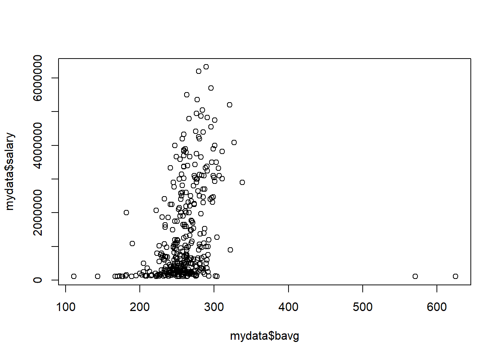
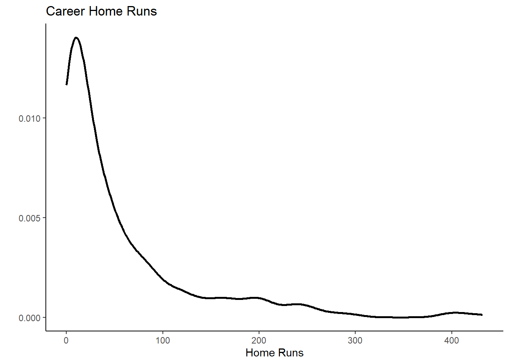
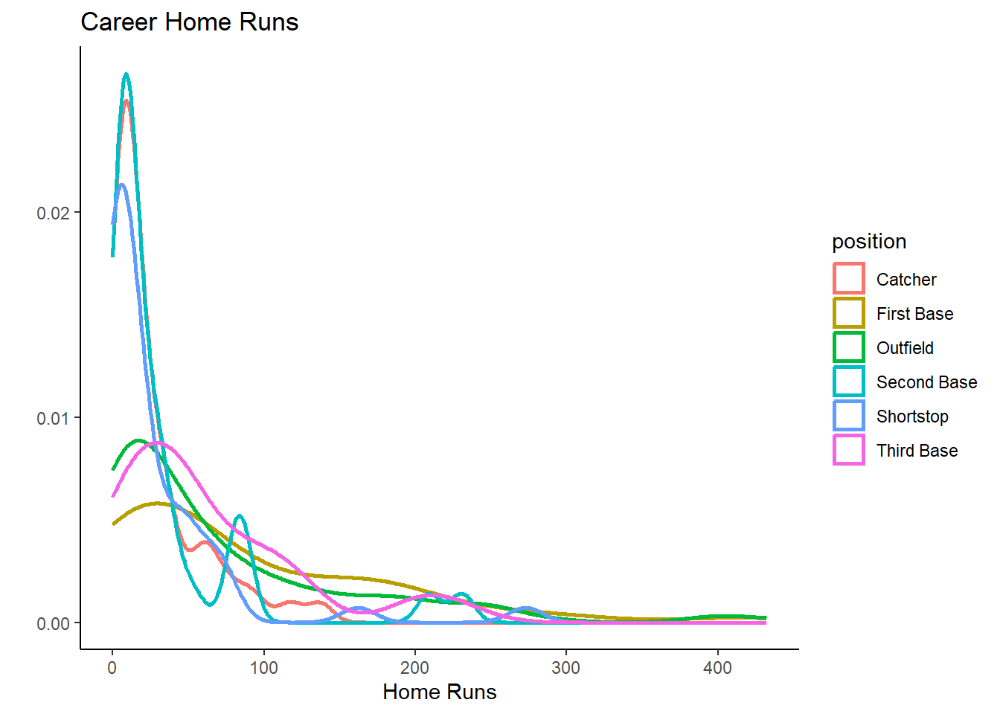

Data Loading
Introduction and Setup
Here we will introduce one of the most powerful tools R has to offer, graphical representation of data. Adrian Pagan, an excellent Australian econometrician once said “A simple plot tells a lot!”. So let’s see how to create simple plots.
With R being on open source software you will find quite a few
different ways to produce graphics. Some are build, by default, into the
R software, like the plot function. But as a regular user of R you will
want to develop a wider range of graphics and then you will want to use
a graphics package. The package we will introduce here is the
ggplot2 package. Install this package in case you have not
yet done so on your computer.
install.packages("ggplot2")As you know, the above package installation you will only have to do once on your computer.
library(tidyverse)When you load a package with the library() command you
will often get some warning messages. On most occasions you can just
ignore them. ggplot will automatically load the
ggplot package and you are likely to want to do some
manipulation using the tiyverse package.
Loading a dataset
Let’s get a dataset to look at. We shall use the Baseball wages
dataset, mlb1.csv.
Make sure that it is saved into your working directory. (Recall, use
setwd() to set your working directory).
mydata <- read.csv("mlb1.csv", na.strings = ".")Let’s check out what variables we have in this data-file
names(mydata)## [1] "salary" "teamsal" "nl" "years" "games" "atbats"
## [7] "runs" "hits" "doubles" "triples" "hruns" "rbis"
## [13] "bavg" "bb" "so" "sbases" "fldperc" "frstbase"
## [19] "scndbase" "shrtstop" "thrdbase" "outfield" "catcher" "yrsallst"
## [25] "hispan" "black" "whitepop" "blackpop" "hisppop" "pcinc"
## [31] "gamesyr" "hrunsyr" "atbatsyr" "allstar" "slugavg" "rbisyr"
## [37] "sbasesyr" "runsyr" "percwhte" "percblck" "perchisp" "blckpb"
## [43] "hispph" "whtepw" "blckph" "hisppb" "lsalary"You can find short variable descriptions here and of
course you need to understand what data types the variables represent
(check str(mydata) to confirm the R datatypes.) The
datafile contains information on 353 baseball players.
You can see that there are several variables which indicate which fielding position a player has. For instance player 10 is an outfield player as the player has a value of 1 in the outfield variable and 0s otherwise.
mydata[10,18:23]## frstbase scndbase shrtstop thrdbase outfield catcher
## 10 0 0 0 0 1 0The following will create one new variable called
poition, which indicates the position a player plays
in.
mydata <- mydata %>% mutate(position = case_when(frstbase == 1 ~ "First Base",
scndbase == 1 ~ "Second Base",
shrtstop == 1 ~ "Shortstop",
thrdbase == 1 ~ "Third Base",
outfield == 1 ~ "Outfield",
catcher == 1 ~ "Catcher")) %>% mutate(position = as.factor(position))In a similar manner we create a variable which describes the ethnicity of players.
mydata <- mydata %>% mutate(ethnicity = case_when(black == 1 ~ "black",
hispan == 1 ~ "hispanic",
(black == 0) & (hispan == 0) ~ "white")) %>%
mutate(ethnicity = as.factor(ethnicity))Here we categorise players as either black hispanic or white. This is the information available from the data but may not well represent more complicated ethnicities.
Basic graphics in R
Rhas some basic build-in graphics capability. This is called with the
plot function. The plot function recognises the datatype
and adjusts the graphics type accordingly. For instance:
plot(mydata$salary)
It has recognised that the data in salary are numeric
and this triggers a scatterplot. To produce a scatter plot you need a
second variable and as we did not deliver any it automatically uses the
data index (which here is just like a numbering of the players in the
datafile). If you want to set which variable appears on the horizontal
axis (e.g. the batting average, bavg), then you need to set
this as follows:
plot(mydata$bavg,mydata$salary) # first variable for horizontal, 2nd for vertical axis
If we are sending a categrical/factor variable to plot
such as the position variable, then the function will
automatically create a bar graph.
plot(mydata$position)
These plots can be very useful to get a first idea of what the data look like and it is possible to adapt certain aspects of these plots, however, when you want to prepare nice looking plots for a report, then you are likely to want to use a more powerful tool.
Advanced graphics with ggplot
The ggplot package is one of these packages you can use
to produce really beautiful graphics. There are literally books written just to help you with
using this package to produce nice graphics. This here is just the
briefest of introductions.
There is a large range of different graphs that are available from
the ggplot package. A great overview and an excellent
source of help is available from this ggplot
cheatsheet. It is well worth having this available on your computer.
Of ourse, al ot more detail is available from Hadley Wikham’s online book.
General structure of graphic commands in ggplot
In general the structure of creating
g1 <- ggplot(mydata, aes(y = VARIABLENAME, x = VARIABLENAME, colour = VARIABLENAME)) +
geom_GRAPHTYPE() +
geom_OTHERSTUFF()It is worth briefly thinking about what this does, such that what
follows makes more sense. First, we create a new object into which we
will save the graph, here called g1. We call the function
ggplot(mydata, ) which instructs R to prepare a graph using
data stored in the mydata object. This implies that in what
follows R just assumes that variables we are using are in this
dataframe.
aes(y = VARIABLENAME1, x = VARIABLENAME2, colour = VARIABLENAME3)
then provides further detail. In particular it tells R that
VARIABLENAME1 should be on the vertical/y axis and
VARIABLENAM2 should be on the horizontal/x axis. Further,
data points will be displayed in different colors as per
VARIABLENAME3. Not all graph types will actually need all
of this information.
At this stage, R has just prepared a blank canvas with those
parameters, but has not yet created a graph. That is achieved by
+ geom_GRAPHTYPE(). As you will soon see there are
different graph types available. Then you can add further details to
your graph + geom_OTHERSTUFF().
It is useful to differentiate between graphs that use one and those that use two variables.
One variable graphs
Say we want to graphically represent the distribution of a
categorical variable, like the position variable.
g1 <- ggplot(mydata, aes(x = position)) +
geom_bar() This has produced the graph and it is stored in g1. You
can see it by calling g1.
g1
This is very similar to the bar graph produced in the basic graph section. Let’s change the esthetics a little by adding a theme and a title.
g1 <- ggplot(mydata, aes(x = position)) +
geom_bar() +
theme_classic() +
labs(x = "Player position", y = "Number of players", title ="Bar Chart for Player positions")
g1If you wish to represent numerical data you have a few more options than a bar chart.
Let’s assume you want a histogram of the hruns variable,
which indicates how many career home runs a player has.
g2 <- ggplot(mydata, aes(x = hruns)) +
geom_histogram() +
theme_classic() +
labs(x = "Home Runs", y = "", title ="Career Home Runs")
g2## `stat_bin()` using `bins = 30`. Pick better value with `binwidth`.
You get a good idea from this about the distribution of the home run
variale. Instead of geom_histogram() you could use a smooth
versio of the histogram, called geom_density(). Try for
yourself what the option size = 1 inside the function call
does by changing the value (remember you cannot break your
computer).
g3 <- ggplot(mydata, aes(x = hruns)) +
geom_density(size = 1) +
theme_classic() +
labs(x = "Home Runs", y = "", title ="Career Home Runs")
g3
And now you will learn one of the incredibly powerful modifications
you can undertake with ggplot. In the initial function
call, in the aesthetics (aes) settings we add
colour = position. See what happens:
g4 <- ggplot(mydata, aes(x = hruns, color = position)) +
geom_density(size = 1) +
theme_classic() +
labs(x = "Home Runs", y = "", title ="Career Home Runs")
g4
We now get different density plots by position. You can now easily see that Catchers, Shortstops and Second Base players have fewer home runs, they are the very specilist fielding positions.
This is pretty nice already, but we can do even better. Try and
identify the what was added and play with the alpha
parameter to see what it does.
g4 <- ggplot(mydata, aes(x = hruns, fill = position, colour = position)) +
geom_density(size = 1, alpha = 0.2) +
theme_classic() +
labs(x = "Home Runs", y = "", title ="Career Home Runs")
g4It is important to understand that a data analyst will rarely remember all of these commands. A crucial programming technique is searching the internet. You could, for instance, search for “r ggplot overlying density plots” and then you should find an example which produces a similar plot. You can then copy and paste the code and adjust it to your dataset.
Two variables graph
In this section you can learn how to produce graphs that visualise two variables.
Perhaps the most classic of such plots is a scatter diagram.
g5 <- ggplot(mydata, aes(x = hruns, y = salary)) +
geom_point() +
theme_classic() +
labs(x = "Home Runs", y = "Salary", title ="Scatter plot")
g5Here we can see that in general there is a positive relationship between the number of career home runs and the salary variables.
After we learned that the number of home runs differs significantly between positions (some positions job it is to get home runs, other positions have other specialisations), it is obvious that there is more to the data. Let’s see how we can use position information in this graph. We could add a colour differentiation
g7 <- ggplot(mydata, aes(x = hruns, y = salary, colour = position)) +
geom_point() +
theme_classic() +
labs(x = "Home Runs", y = "Salary", title ="Scatter plot")
g7But this is somewhat too messy to actually see anything here. Another way to do this is what is called facetting.
g8 <- ggplot(mydata, aes(x = hruns, y = salary)) +
geom_point() +
theme_classic() +
facet_wrap(vars(position)) +
labs(x = "Home Runs", y = "Salary", title ="Scatter plots")
g8The addition of + facet_wrap(vars(position)) produced a
scatter plot for each position separately. In this case this does not
really help us a lot other than to see that outfielders are the players
which score, on average, more home runs than other positions.
But faceting can be incredibly revealing. Look at this graph:
g9 <- ggplot(mydata, aes(x = position)) +
geom_bar() +
theme_classic() +
facet_grid(vars(ethnicity)) +
labs(title ="Bar graph of positions (conditional on ethnicity) ")
g9
This very clearly illustrates that, at the time, black players predominantly played in the outfield.
Other graphs
In the above you really only scratched the surface of what
ggplot can do. Another very common type of graph is a
time-series plot. The Basketball data do not have any time dimension
such that there is no obvious use for a time-series plot. However, it
will be constructed in a very similar way, just using the
geom_line() option. Explore the possibilities in hadley Wickham’s book.
Saving graphs
Summary
In this section you learned how to produce visual representations of data. These can be a very important tool when you communicate your work.